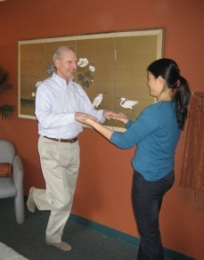

Dr. Charmaine L. Tu
chiropractor
Often referred to as the sixth sense, the proprioception sensory system is how your brain and body communicate effortlessly. The proprioception sensory system indicates to the brain where various parts of the body are located in relation to each other. It is the sense that allows you to keep your eyes on the road while driving and knowing where your hands are on the steering wheel, as well as your foot on the gas pedal. It is the sense that allows you to learn basic motor skills such as crawling to walking, to more complex skills such as typing or playing tennis.
This sensory system is comprised of proprioceptors found in muscle tissue that monitor length, pressure, tension and noxious stimuli. Proprioceptors stimulate complex muscle spindles that then trigger a cascade of events that control fine body movements and coordination.
Proprioception plays an important role in keeping our bodies safe. It is the sense that triggers the brain to send out immediate and unconscious adjustments to the muscles and joints in order to achieve movement and balance.
For example, if you slip on a small puddle of water in the kitchen, proprioception is the sense that helps you to react and recover before (hopefully) hitting the ground.
The sense of proprioception is dependent on visual and auditory senses. Unfortunately with age, both vision and inner-ear functions decrease and become less dependable. With this decrease, our body’s ability to respond and recover also lessen, making trips and falls more common. Newspapers on the floor or items that we would have ignored when younger are, in later age, potential items that could cause a severe fall, injury, and/or disability.
Following is a brief

guideline to decrease and prevent injury and improve proprioception.• Have your vision and hearing checked regularly.
• Unclutter your walking areas.
• Include both stabilization and balancing exercises in your exercise regime.
Though exercise is important as you age, a simple walk in the park is not enough to maintain your proprioception. Consult with your chiropractor, physiotherapist, or personal trainer for specific exercises that can help improve your proprioception and coordination. There are simple balancing exercises that might seem easy “on paper,” but most of us require practice and time to learn and regain excellent proprioception. For example, with a nearby support or rail to hang on to, stand and balance on one leg for a minute. Without practice, most will fail at this simple task! This is a result of weakened proprioception.
• A history of chronic ankle sprains, trips or falls, can be attributed to weakened proprioception. Of course, medications that cause dizziness or change in blood pressure can undoubtedly alter your body’s ability to respond to change in terrain. Be sure to consult with your physician periodically to ensure that your medications stay consistent and current with your body’s needs.
• If you are osteopenic or have or are at risk of having osteoporosis, be sure to eat a calcium-rich diet with foods such as broccoli, kale, yogurt, cheese, edamame (green soybeans). It is important to have a healthful amount of calcium to maintain a strong bone matrix. An excess of calcium can cause problems such as calcium deposits in muscle tissue.
If you have questions about calcium intake, consult your physician.
While most of us take this sixth sense for granted, recognizing the functions and potential limitations of proprioception can by the key to preventing injuries and living a longer, healthier life.

Exercising Your 6th Sense:
Proprioception helps prevent falls as you age
Written by Charmaine L. Tu, D.C.
Los Altos Town Crier, March 2010
5050 El Camino Real, Suite 115, Los Altos, CA 94022 (650)787-5570